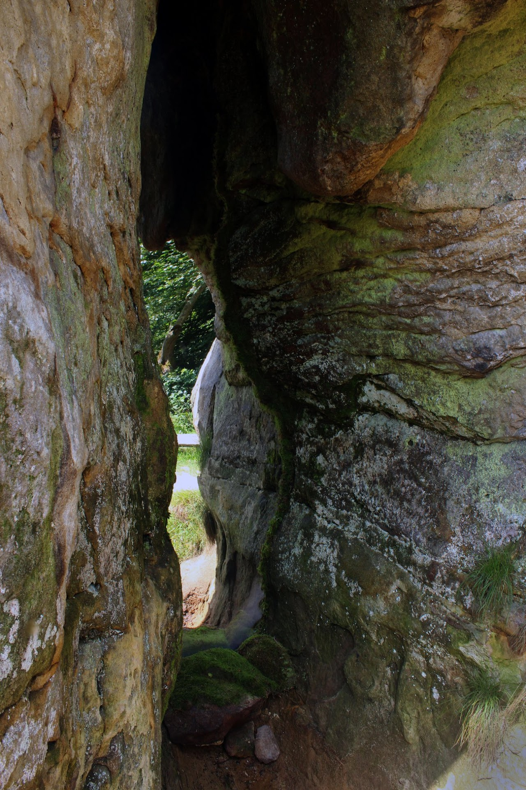

THE ONE SITTING IN THE ROCK
2017 · Land Art Symposium "Land of Power" · Tustan Historical and Cultural Reserve, Urych village, Ukraine
Concept
According to local legend, the Stone, the massive rock on which the Tustan fortress once stood, opens at a particular moment in time. Inside it, a gray-haired old man is said to sit, guarding hidden treasures. The legend describes the Stone as a threshold between worlds, accessible only under precise and unknowable conditions.
Our intervention began with the acknowledgment that we encountered the Stone at the “wrong” time. Lacking access to its mythical opening, we turned to optical illusion as a method. By introducing a mirror, we simulated an opening that does not physically exist, creating a visual rupture within the rock’s surface.
The work reframes folklore not as an external narrative about monsters and treasures concealed in the landscape, but as a projection of inner states. In this reading, the guardian, the treasure, and the threat all originate within the observer. The mirror becomes a tool of displacement, redirecting the gaze inward and suggesting that what folklore locates in stone and earth ultimately resides in the human psyche.